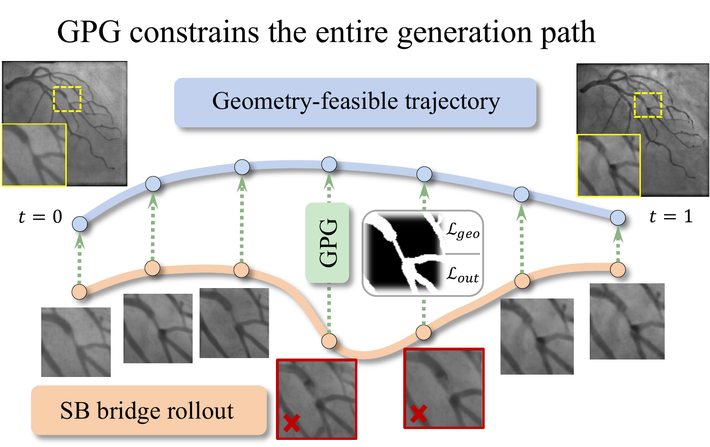
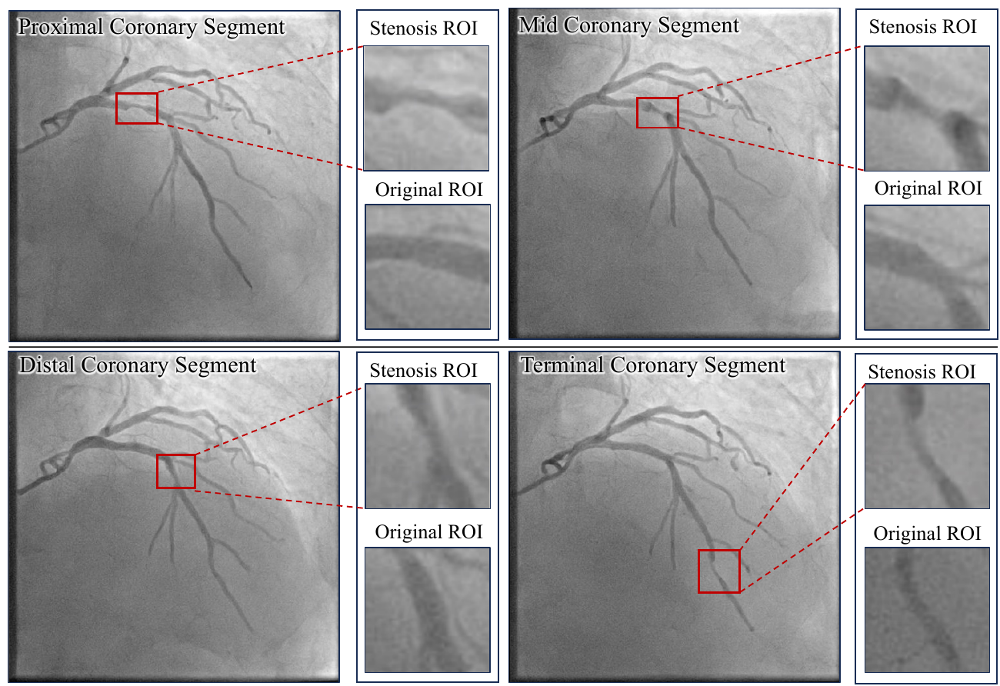

{kind=link}
Specify the geometry
Control the location and shape of an edit through an edited mask, image edges, and boundary cues.
ICML 2026 / Research project
Geometrically Constrained Stenosis Editing in Coronary Angiography via Entropic Optimal Transport
School of Electrical and Information Engineering, Tianjin University
Precise local edits.
Structure-preserving generative paths.

01 / Overview
Useful synthetic data needs more than a plausible appearance. For localized image editing, the output must follow a specified geometry and preserve structures outside the target region. This is especially demanding for thin, connected vascular structures.
OT-Bridge Editor formulates this task as constrained entropic optimal transport. A Schrödinger bridge connects a structure-conditioned start state to the image domain, and geometric generation-path guidance (GPG) imposes constraints during the trajectory.
The paper studies coronary stenosis editing as a concrete application. We evaluate both the edited images and their value for training downstream detectors on held-out real data.
Control the location and shape of an edit through an edited mask, image edges, and boundary cues.
Guide intermediate bridge states, enforcing target geometry and preserving the protected region.
Evaluate synthetic augmentation across four detector families and two real-data settings.
02 / Method
An editing mask separates the target region from the protected background. The vessel-structure composite representation combines the edited mask, masked edges, and boundary information.
The entropic OT formulation seeks a transport that satisfies the geometry and preservation constraints. Its Schrödinger-bridge formulation provides the generative trajectory.
GPG acts on intermediate states using boundary alignment and protected-region stability. The reported implementation uses 50 rollout steps and applies GPG every 5 steps.

The bridge minimizes divergence from a reference process while matching endpoint distributions and respecting the feasible set:
Outside the editing mask, the source appearance is protected. Inside it, a structural operator constrains the output to the requested target geometry. GPG combines the bridge transition with a geometry-aware projection.
Reported settings: entropic regularization ε = 0.01, protected-region weight λout = 10, geometric alignment weight λgeo = 1. Full definitions and derivations are in Section 3 of the paper.
03 / Visual results



04 / Experiments
We compare Real-only, Synth-only, and Real+Synth training using the same detector backbones and evaluation splits. All reported detection results below are measured on real images.
Public benchmark. Detectors are trained with real images, synthetic images, or their union, and evaluated on the same held-out real test split. Mean ± standard deviation over three runs.
| Detector | Training data | mAP@0.5 ↑ | F1 ↑ |
|---|---|---|---|
| YOLOv8 | Real-only | 0.525 ± 0.009 | 0.664 ± 0.009 |
| YOLOv8 | Synth-only | 0.662 ± 0.008 | 0.737 ± 0.008 |
| YOLOv8 | Real+Synth | 0.727 ± 0.006 | 0.775 ± 0.007 |
| DINO-DETR | Real-only | 0.508 ± 0.010 | 0.645 ± 0.010 |
| DINO-DETR | Synth-only | 0.615 ± 0.012 | 0.697 ± 0.011 |
| DINO-DETR | Real+Synth | 0.720 ± 0.007 | 0.766 ± 0.008 |
| Grounding DINO | Real-only | 0.276 ± 0.012 | 0.453 ± 0.014 |
| Grounding DINO | Synth-only | 0.330 ± 0.015 | 0.505 ± 0.015 |
| Grounding DINO | Real+Synth | 0.418 ± 0.011 | 0.564 ± 0.013 |
| RTMDet | Real-only | 0.545 ± 0.008 | 0.687 ± 0.009 |
| RTMDet | Synth-only | 0.625 ± 0.010 | 0.726 ± 0.010 |
| RTMDet | Real+Synth | 0.675 ± 0.007 | 0.749 ± 0.008 |
Internal dataset collected across three centers. Evaluation uses held-out real images with the same detector suite and training settings. Mean ± standard deviation over three runs.
| Detector | Training data | mAP@0.5 ↑ | F1 ↑ |
|---|---|---|---|
| YOLOv8 | Real-only | 0.654 ± 0.011 | 0.725 ± 0.010 |
| YOLOv8 | Synth-only | 0.582 ± 0.014 | 0.648 ± 0.013 |
| YOLOv8 | Real+Synth | 0.731 ± 0.008 | 0.779 ± 0.007 |
| DINO-DETR | Real-only | 0.638 ± 0.010 | 0.710 ± 0.009 |
| DINO-DETR | Synth-only | 0.565 ± 0.013 | 0.635 ± 0.012 |
| DINO-DETR | Real+Synth | 0.725 ± 0.007 | 0.768 ± 0.008 |
| Grounding DINO | Real-only | 0.385 ± 0.012 | 0.532 ± 0.014 |
| Grounding DINO | Synth-only | 0.312 ± 0.016 | 0.485 ± 0.015 |
| Grounding DINO | Real+Synth | 0.442 ± 0.010 | 0.588 ± 0.011 |
| RTMDet | Real-only | 0.615 ± 0.009 | 0.695 ± 0.010 |
| RTMDet | Synth-only | 0.548 ± 0.012 | 0.622 ± 0.011 |
| RTMDet | Real+Synth | 0.688 ± 0.006 | 0.754 ± 0.007 |
Source: downstream detection tables in the camera-ready manuscript. Download results (CSV) · Full paper
Real+Synth has the highest mAP@0.5 and F1 for every reported detector in both settings. Synthetic-only training performs differently across datasets, highlighting the importance of evaluating on real images.
| Method | FID ↓ | IS ↑ | LPIPS ↓ | SSIM ↑ |
|---|---|---|---|---|
| Pix2PixHD | 52.874 | 4.150 | 0.704 | 0.676 |
| SPADE | 78.636 | 2.831 | 0.600 | 0.577 |
| SDEdit | 46.900 | 3.120 | 0.410 | 0.705 |
| SDM | 39.417 | 2.708 | 0.485 | 0.616 |
| SiameseDiff | 34.200 | 2.710 | 0.281 | 0.790 |
| OT-Bridge Editor | 16.747 | 4.630 | 0.248 | 0.878 |
05 / Ablation & scope
GPG is compared with endpoint-only constraints and a variant without the boundary term. Boundary Dice and IoU are distinct from the image-quality metrics above.
| Variant | Boundary Dice ↑ | Boundary IoU ↑ | Final path error ↓ |
|---|---|---|---|
| Endpoint only | 0.765 ± 0.024 | 0.682 ± 0.028 | 2.8 ± 1.2 |
| Without boundary term | 0.582 ± 0.015 | 0.455 ± 0.018 | 12.4 ± 1.8 |
| GPG | 0.895 ± 0.008 | 0.812 ± 0.009 | 1.1 ± 0.3 |
The composite domain combines complementary structural cues. Removing the preservation constraint increases changes outside the edited region.
In the reported ARCADE scaling study, gains saturate around a 1:1 synthetic-to-real ratio. More synthetic data is not uniformly more useful.
Spatially displaced masks reduce downstream detection performance more than modest boundary jitter. Accurate localization remains important.
The experiments concern coronary angiography. Unseen centers, rare lesion morphologies, and different acquisition protocols require further study. The method is a research data-augmentation tool.
06 / Reference
arXiv citation · Accepted to ICML 2026
@article{li2026geometrically,
title={Geometrically Constrained Stenosis Editing in Coronary Angiography via Entropic Optimal Transport},
author={Li, Jialin and Zhang, Zhuo and Cao, Yue and Lan, Guipeng and Wen, Jiabao and Xiao, Shuai and Yang, Jiachen},
journal={arXiv preprint arXiv:2605.08851},
year={2026},
note={Accepted to ICML 2026},
doi={10.48550/arXiv.2605.08851},
url={https://arxiv.org/abs/2605.08851}
}{kind=link}